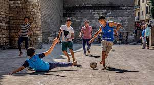

Merhaba! Benim ismim Emir Kır. Sakarya Üniversitesi bilgisayar mühendisliği bölümünde okuyorum. Yirmi yaşındayım. 22 Ağustos 2003 tarihinde dünyaya geldim. Doğduğumdan beridir Sakarya şehrinde yaşıyorum. İlk 2 yaşımı Sakaryanın Hendek ilçesinde geçirdim. Ardından Adapazarı ilçesine taşındım. Sinemaya gitmek, arkadaşlarımla kahve içmek, farklı şehirleri gezmek en sevdiğim etkinliklerdendir. En sevdiğim hobiler genel olarak bütün sporları kapsasa da içlerinden en sevdiğim futboldur. Küçüklüğümden beridir mahallemde futbol oynarım ayrıca futbolu izlemeyi de severim. Ayrıca kod yazmak da en sevdiğim işlerden biridir.
